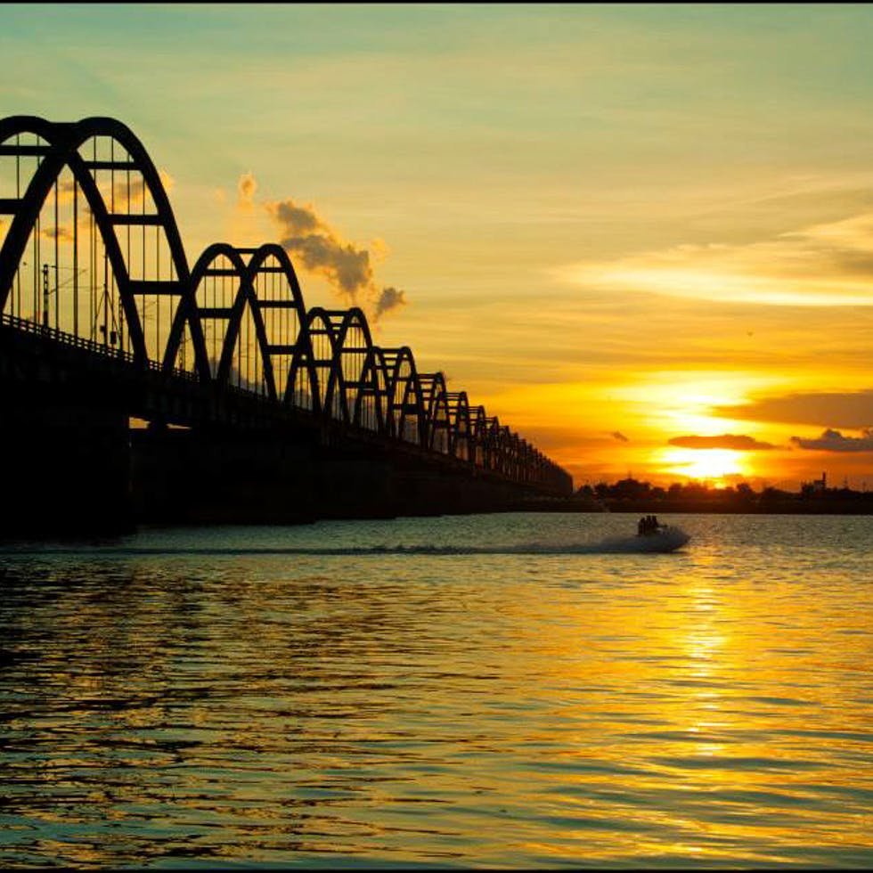

Rajahmundry, officially known as Rajamahendravaram, is a city in the Indian state of Andhra Pradesh. Located 200 km southwest of state's executive capital Visakhapatnam on the banks of Godavari River,one that gave birth to a rich culture and a whole new language.It is often referred by the title 'Born City' and is rightfully the cultural capital of Andhra Pradesh.it is the seventh most populated city in the state.

Hotal Shelton
Hotel shelton rajamahendri is one of the star hotels in rajahmundry. Luxury hotel with world class comfort & convenience in accommodation & other facilities.
Markandeya temple
One of the ancient temples of Rajahmundry.The temple was rebuilt in 1818 which shows Lord Shiva along with all other deities in one place
Airport RJY
Rajamundry Airport is situated at a distance of 18kms from the city at Madhurapudi.The main airlines flying in this region are Jet Airways and Spicejet.